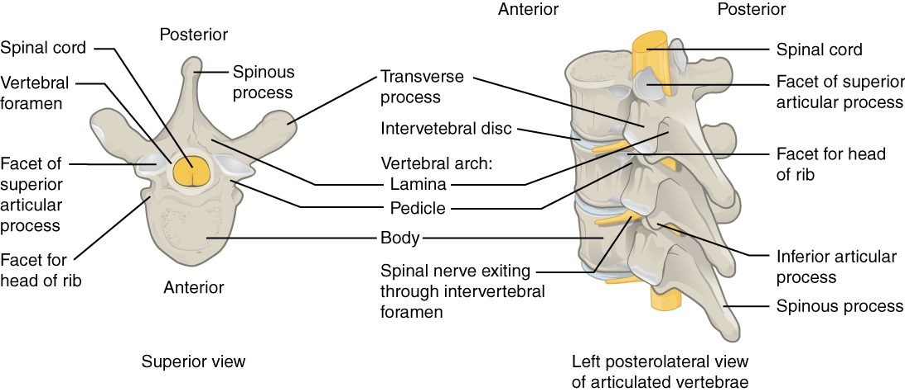

The vertebral column
1Why this matters
Marcus, 42, bends over to lift a heavy box and feels something give in his lower back. Within minutes, pain shoots from his buttock down the back of his left leg into his foot, and his toes tingle. His back bones are not broken. The soft center of one of the pads between two lumbar vertebrae has pushed out and is pressing on a nerve.
2What this builds on
3Quick check before you start
1. What kind of cartilage is tough enough to form the pads between the vertebrae?
- Hyaline cartilage
- Elastic cartilage
- Fibrocartilage
Show the answer
Fibrocartilage has thick bundles of collagen fibers, which make it resist both squeezing and pulling. That is why it forms the intervertebral discs. Hyaline cartilage covers bone ends, and elastic cartilage shapes the outer ear.
- Hyaline cartilage:
- Elastic cartilage:
- Correct: Fibrocartilage:
2. Which body region is the lower back, between the ribs and the pelvis?
- Cervical region
- Thoracic region
- Lumbar region
Show the answer
The lumbar region is the lower back. The cervical region is the neck and the thoracic region is the chest.
- Cervical region:
- Thoracic region:
- Correct: Lumbar region:
3. Which division of the skeleton does the backbone belong to?
- The axial skeleton
- The appendicular skeleton
- Neither: it forms its own division
Show the answer
The backbone is part of the axial skeleton, the upright core with the skull and rib cage. The appendicular skeleton is the limbs and the bones that attach them.
- Correct: The axial skeleton:
- The appendicular skeleton:
- Neither: it forms its own division:
4Anatomy

With labels hidden, select a box to reveal its label.
5How it works, step by step
- Lifting while bent forward squeezes the front edges of the lumbar vertebral bodies together.The pressure pushes the gel of the nucleus pulposus backward inside the disc.
- The nucleus presses on the back of the anulus fibrosus, where the rings are thinnest and have weakened with age.The fibers of the anulus tear, and the nucleus pushes out through the gap: a herniated disc.
- The posterior longitudinal ligament covers only the midline of the back of the disc.The bulge usually goes backward and to one side, into the vertebral canal just inside the intervertebral foramen.
- The bulge presses on a nerve running down the canal toward its exit gap. In the lower back, this is usually the nerve that leaves one level lower.The squeezed nerve causes pain, tingling or weakness along the area it serves, often down one leg.
6Core concepts
7A common mistake
The wrong idea: A "slipped disc" is a disc that has slid out of place from between the vertebrae.
What actually happens: Discs do not slip. Each disc is firmly attached to the vertebral bodies above and below it. In a herniated disc, the tough outer ring (the anulus fibrosus) tears, and some of the soft core (the nucleus pulposus) bulges out through the tear. The rest of the disc stays where it is.
8Check yourself
Anything you miss goes into your review queue.
1. Name the pinned part of the vertebral arch.
- Pedicle
- Transverse process
- Lamina
- Spinous process
Show the answer
The laminae are the two flat plates that angle in from the pedicles and meet in the midline behind the vertebral foramen, where the spinous process begins.
- Pedicle: The pedicles are the short stalks that come straight back from the body; the laminae continue from them.
- Transverse process: The transverse processes point out to the sides from where each pedicle meets its lamina.
- Correct: Lamina: Correct. This flat plate of the arch is a lamina.
- Spinous process: The spinous process points backward from where the two laminae meet; it is not the plate itself.
2. Name the pinned part of the intervertebral disc.
- Anulus fibrosus
- Nucleus pulposus
- Vertebral body
- Ligamentum flavum
Show the answer
The nucleus pulposus is the soft, gel-like core of the disc, mostly water held by water-binding molecules.
- Anulus fibrosus: The anulus fibrosus is the ring of fibrocartilage around the core, not the core itself.
- Correct: Nucleus pulposus: Correct. The soft center of the disc is the nucleus pulposus.
- Vertebral body: The vertebral body is bone, above and below the disc.
- Ligamentum flavum: The ligamentum flavum joins the laminae behind the vertebral canal, not the bodies.
3. An isolated vertebra has a small hole in each transverse process. Which region is it from?
- Cervical
- Thoracic
- Lumbar
- Sacral
Show the answer
Only cervical vertebrae have transverse foramina. Stacked, they form a channel for the artery that runs up to the back of the brain.
- Correct: Cervical: Correct. Transverse foramina mark a cervical vertebra.
- Thoracic: Thoracic vertebrae have costal facets on their transverse processes, not holes.
- Lumbar: Lumbar transverse processes are long and thin, with no holes.
- Sacral: Sacral vertebrae are fused into the sacrum; their holes are the sacral foramina.
4. In the lab you pick up a vertebra with a very large, thick, kidney-shaped body, a short blunt spinous process pointing straight back, and no facets or holes on its transverse processes. Where in the column did it come from?
- The neck
- The chest
- The lower back
- The fused sacrum
Show the answer
Lumbar vertebrae carry the weight of the whole trunk, so their bodies are the largest. Their spinous processes are short and hatchet-shaped, and they have neither transverse foramina nor costal facets.
- The neck: Cervical vertebrae have small bodies and holes in their transverse processes.
- The chest: Thoracic vertebrae have costal facets for ribs and long, downward-sloping spinous processes.
- Correct: The lower back: Correct. This is a lumbar vertebra.
- The fused sacrum: Sacral vertebrae are fused into one bone and are not found as single vertebrae in an adult.
5. A 42-year-old lifts a heavy box while bent forward and feels sudden low back pain that shoots down the back of one leg. Imaging shows soft disc material pressing on a nerve at L5 on one side. What happened?
- The whole disc slid out from between the vertebral bodies as one piece
- The nucleus pulposus pushed out through a tear in the anulus fibrosus
- The ligamentum flavum snapped and folded into the canal
- The vertebral body of L5 collapsed into a wedge
Show the answer
In a herniated disc, the outer rings of the anulus fibrosus tear and the gel of the nucleus pulposus is squeezed out, usually backward and to one side, where it presses on a nerve on its way to an intervertebral foramen.
- The whole disc slid out from between the vertebral bodies as one piece: The disc stays anchored to the bodies above and below it; the whole disc does not slide out.
- Correct: The nucleus pulposus pushed out through a tear in the anulus fibrosus: Correct. The nucleus herniates through a tear in the anulus.
- The ligamentum flavum snapped and folded into the canal: The ligamentum flavum is elastic and does not snap with lifting; this would not produce soft disc material on the nerve.
- The vertebral body of L5 collapsed into a wedge: A wedge collapse of a vertebral body is a compression fracture, typical of osteoporosis, and it is bone, not soft disc material.
6. Which curves of the spine are primary curves?
- Cervical and lumbar
- Thoracic and lumbar
- Cervical and sacrococcygeal
- Thoracic and sacrococcygeal
Show the answer
The primary curves are the thoracic and sacrococcygeal curves. They bow backward and are kept from the C-shaped curve of the fetus.
- Cervical and lumbar: The cervical and lumbar curves are the secondary curves, which form after birth.
- Thoracic and lumbar: The thoracic curve is primary, but the lumbar curve is secondary.
- Cervical and sacrococcygeal: The sacrococcygeal curve is primary, but the cervical curve is secondary.
- Correct: Thoracic and sacrococcygeal: Correct. The thoracic and sacrococcygeal curves are primary.
7. A healthy adult stands and walks for 12 hours after waking. Predict the change in each variable by evening, compared with first thing in the morning.
| Variable | Change |
|---|---|
| Water content of the nuclei pulposi | — |
| Height of each intervertebral disc | — |
| The person's total standing height | — |
| Height of each vertebral body | — |
Show the answer
Standing load squeezes water out of the nuclei pulposi, so the discs thin and the person is slightly shorter by evening. The bony vertebral bodies do not change. Lying down overnight lets the discs take water back up.
- Water content of the nuclei pulposi: down. The weight of the body above squeezes water out of the gel-like nuclei over the day.
- Height of each intervertebral disc: down. As the nuclei lose water, each disc becomes slightly thinner.
- The person's total standing height: down. Twenty-three slightly thinner discs add up to a loss of about 1 to 2 cm, regained overnight lying down.
- Height of each vertebral body: no change. The vertebral bodies are bone and do not measurably compress under everyday loads.
8. A driver's car is hit from behind, and her head snaps backward over the headrest. Which ligament is most likely to be stretched or torn?
- Supraspinous ligament
- Ligamentum flavum
- Nuchal ligament
- Anterior longitudinal ligament
Show the answer
Snapping the head back bends the neck backward. The anterior longitudinal ligament runs down the front of the vertebral bodies and resists exactly that movement, so it takes the strain.
- Supraspinous ligament: The supraspinous ligament is on the back of the column; bending backward slackens it.
- Ligamentum flavum: The ligamenta flava lie behind the canal and are slack, not stretched, when the neck bends backward.
- Nuchal ligament: The nuchal ligament at the back of the neck is slackened when the head goes back.
- Correct: Anterior longitudinal ligament: Correct. Backward bending strains the anterior longitudinal ligament.
9Summary
The adult vertebral column has 7 cervical, 12 thoracic and 5 lumbar vertebrae, plus the fused sacrum and coccyx. Each vertebra has a weight-bearing body and an arch of pedicles and laminae around the vertebral foramen, with spinous, transverse and articular processes; nerves leave through the intervertebral foramina. Cervical vertebrae have transverse foramina, thoracic vertebrae have costal facets, and lumbar vertebrae have the biggest bodies. The atlas carries the skull and turns around the dens of the axis. The thoracic and sacrococcygeal curves are primary; the cervical and lumbar curves form after birth. Each disc is an anulus fibrosus around a nucleus pulposus, and long ligaments tie the column together.